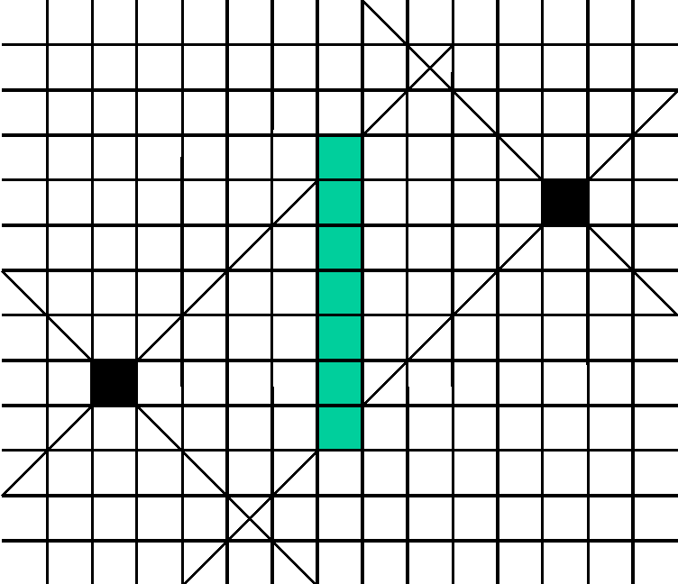

Distance de l'échiquier
Soient deux points P1 : (X1, Y1) et P2 : (X2, Y2).
On donne ΔX = X2 - X1 et ΔY = Y2 - Y1
La distance de l'échiquier entre P1 et P2 est :
distE = max (|ΔX|, |ΔY|)
Un avantage de la distance de l'échiquer est de fournir
une distance de type entier.
Calcul des points milieux

Cas où ΔX >= ΔY :
- Si ΔX est impair, il n'y a pas de point milieu.
- Si ΔX est pair, les points milieux sont sur une droite verticale
passant par le point milieu euclidien, à l'intérieur d'un espace
délimité par les diagonales issues de P1 et P2.
Cas où ΔX < ΔY :
- Si ΔY est impair, il n'y a pas de point milieu.
- Si ΔY est pair, les points milieux sont sur une droite horizontale
passant par le point milieu euclidien, à l'intérieur d'un espace
délimité par les diagonales issues de P1 et P2.
Distance de Manhattan
Retour sur la trame du TP1